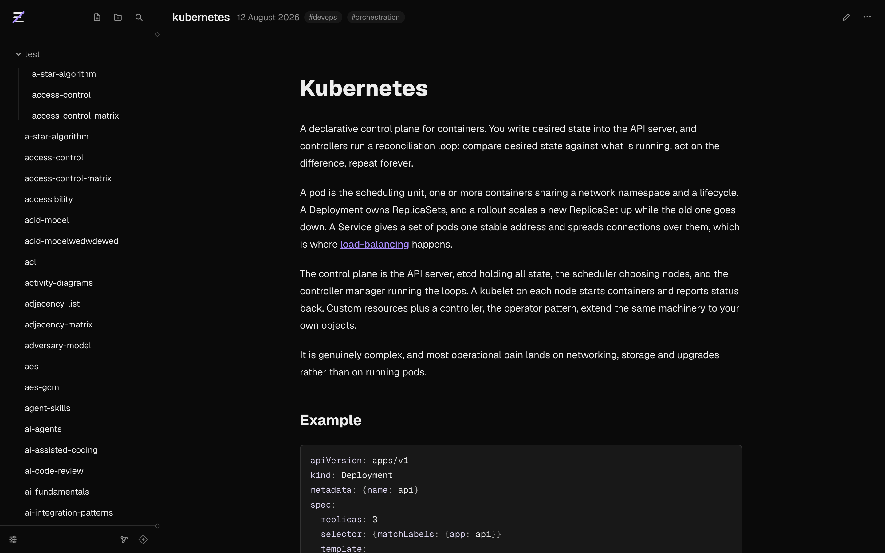
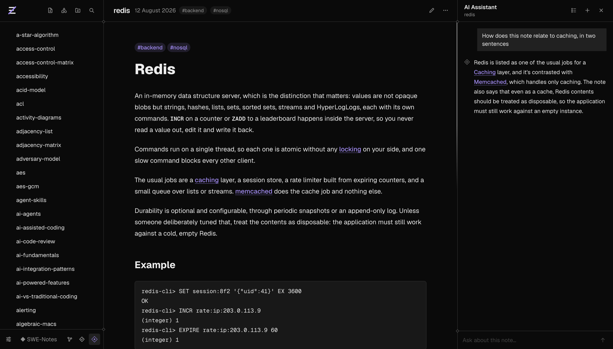
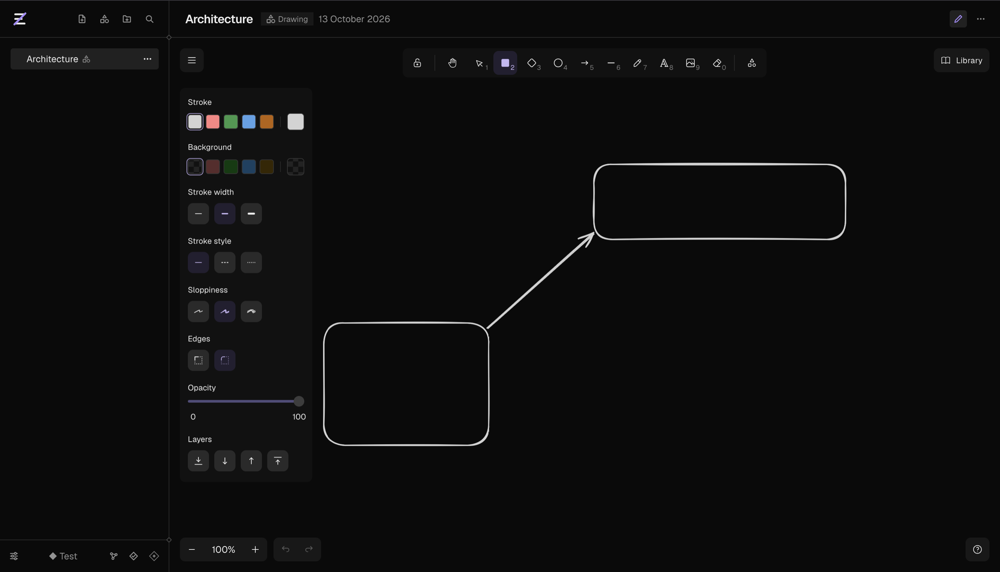
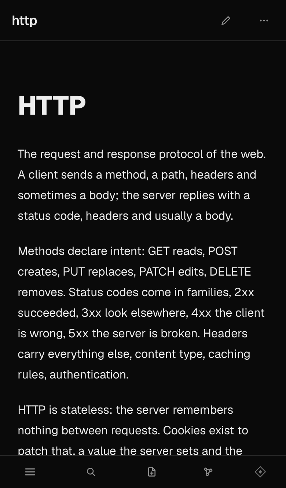
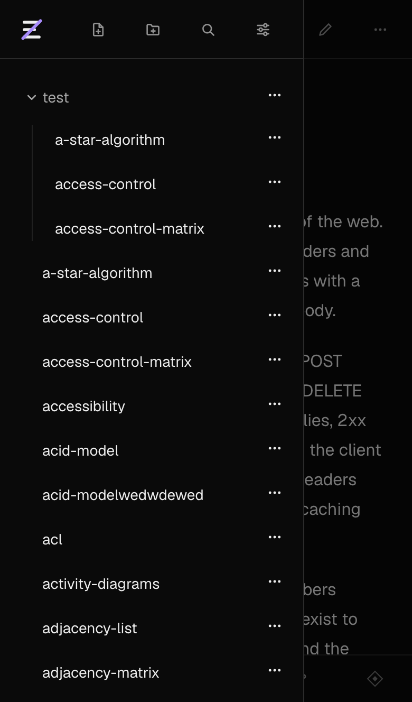

Everything is a keystroke away.
Search runs in the browser, so results come up as you type. Filter the sidebar by title, full text or tag.
| ⌘K | Jump to a note |
| ⌘F | Find in this note |
| / | Search the graph |
| Esc | Close whatever is open |
Zenote is a markdown vault you open in a browser. Link notes with double brackets, see how they connect on a living map, and ask an assistant that has read them.
The editor keeps your markdown exactly as you wrote it and styles it as you go. Type [[ and it suggests notes to link to.
Saving happens on its own. If the same note changed somewhere else while you typed, your version stays put and the other one appears next to it as a conflict copy. There is a Vim mode if you want one.
Notes render with headings, code, tables, maths and diagrams. A link to a note you have not written yet is marked, not broken.
At the bottom of each note you get the notes around it in the graph, and Linked from: every place in the vault that mentions this one, quoted in context.

It sits next to the note you are reading, shows which notes it opened, and writes notes back only if you let it. Each conversation stays with its note.
Pick a provider in settings and paste your own key there.

A drawing is a note with an Excalidraw canvas: boxes, arrows, pen and text, with the shape library one click away. It is saved as a fenced excalidraw block, so it stays plain markdown like everything else.
Type [[a note]] into a label and it becomes a link you can follow from the canvas. Drop a drawing into any note, or ask the assistant to sketch one.

Search runs in the browser, so results come up as you type. Filter the sidebar by title, full text or tag.
| ⌘K | Jump to a note |
| ⌘F | Find in this note |
| / | Search the graph |
| Esc | Close whatever is open |
Write one anywhere in a note. The date and time are optional. One page collects them all, as a list or on a calendar.
It keeps working when the internet does not, and syncs on its own when you are back.
On a phone the vault folds into a drawer and the note gets the whole screen. Add Zenote to your home screen and it opens like an app.


Pick one here and this page wears it, graph included.